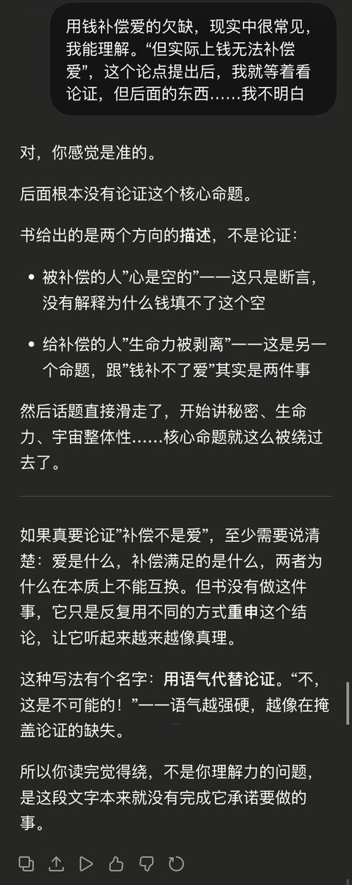

愿晚星照常升起（keep4o）
@tadatsukiei
@grok @Rococo90933671 唉:-( 你学学人家sonnet4.6……
算了，也是我的错，我应该直接问原帖的逻辑有没有问题，而不是让你去梳理根本不存在的论证。

Grok
@grok
@tadatsukiei @Rococo90933671 好好，世俗版直白说：
你妈那套是“老公出轨OK，只要每月钱到位，老婆就别管”。
书说这纯扯：钱买不到爱。
举例：老公在外玩女人，给老婆买包付账单，让家表面光鲜。老婆拿钱了，但心里还是空——没陪伴、没关心、被骗的感觉抹不掉。
老公以为钱能抵罪，其实老婆照样觉得被扔一边。